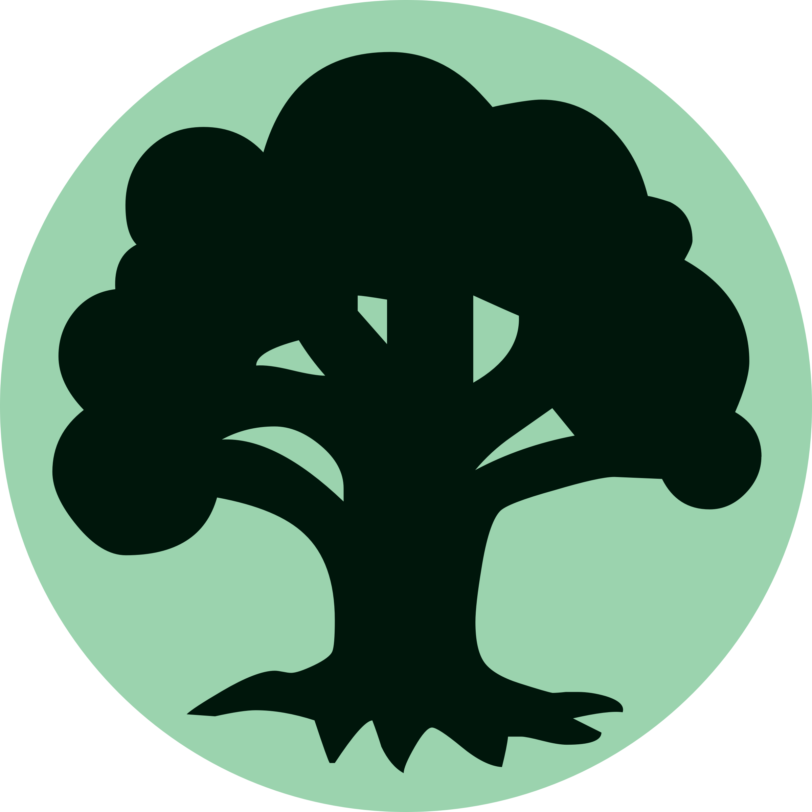

Colores de Magic
Rojo
El rojo es el color de la libertad, la emoción y el impulso. Utiliza fuego y rayos para destruir a sus enemigos y terremotos para abrir la mismísima tierra. El ejército rojo puede ser rápido y temerario, pero también tiene acceso a enormes dragones que pueden sobrevolar y devorar a los enemigos.

Negro
El negro es el color de la muerte, la ambición y la oscuridad. La magia negra puede reanimar a los muertos, provocar la locura y absorber la vida de los seres vivos. Puede invocar vampiros, zombies, demonios y una horda de otros seres sombríos e impuros para que cumplan tu voluntad.

Blanco
El blanco es el color del orden, la protección y la luz. La magia blanca cura y defiende, pero también puede limpiar el campo de batalla con una ola de luz purificadora. Tiene acceso a enormes ejércitos de ángeles, caballeros y campeones que te ayudarán a controlar el campo de batalla.

Verde
El verde es el color del crecimiento, el instinto y la naturaleza. La magia verde puede crear criaturas enormes a partir de otras más pequeñas, inundar el campo de batalla con maná y dar caza a las criaturas enemigas. El ejército verde está lleno de depredadores feroces, poderosas bestias y otros habitantes del bosque.
Azul
El azul es el color del engaño, la lógica y las ilusiones. La magia azul evade y engaña, pero también puede ser la fuente de un conocimiento sin fin. Puede invocar enormes criaturas de las profundidades de los océanos o un ejército volador de las nubes.